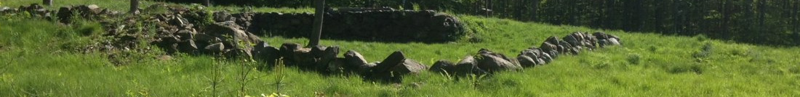

Please read the rules for using properties managed by the Boscawen Conservation Commission.
| Walking Trails | Parking & Trailhead | Map Link | Managed By |
|---|---|---|---|
| Weir Road Town Forest | End of Weir Rd | Map | Boscawen Conservation Commission |
| Boscawen Village Town Forest | North Main St / Route 3 | Map | Boscawen Conservation Commission |
| Northern Rail Trail | End of Depot St | Map at FNRT | Friends of the Northern Rail Trail |
| Currie Trail | Boscawen Elementary School parking lot | No Map Available | Merrimack Valley School District |
| Boat Launch | Parking | Managed By |
|---|---|---|
| Walker Pond Town Forest | At pump house and at boat launch both off Chadwick Hill Rd | Boscawen Conservation Commission |
| Merrimack River Boat Launch | Off Route 3 |
| Other Public Lands | Managed By |
|---|---|
| Hirst Marsh Wildlife Management Area | New Hampshire Fish and Game |
The Conservation Commission manages Boscawen's Town Forests: Walker Pond, Weir Road, and the Village Town Forest. Altogether nearly a thousand acres! These forests are open to the public and they are well loved by thousands of visitors each year. We are a handful of volunteers trying to keep them presentable and healthy. We cannot do this alone.
If you care enough to this then you are probably already following the rules. Thank you! Most visitors to Boscawen's Town Forests do follow these rules and it is greatly appreciated. They are only meant to ensure that your visit will be safe and enjoyable and that these open spaces will be around for visitors in the future.
Click here for a trail map of Weir Road Town Forest

Balancing Rock
The Weir Road Town Forest can be accessed either from Boscawen at the end of Weir Road or from Concord at their end of Weir Road. The following brief description and history of the forest is quoted from a trifold pamphlet prepared by the Boscawen Conservation Commission:
"Approximately 466 acres in size, the forest is abutted on the east side by the 156-acre New Hampshire Fish and Game Hirst Marsh Wildlife Management Area. The City of Concord owns around 57 acres of land near the southern entrance. Combined the total is over 680 acres of conserved diverse forest, marsh, open fields and a beaver pond.
The Weir family farm is the centerpiece of the town forest. It was purchased by the family in 1854 and was primarily a dairy farm. In 1939 John Weir deeded the farm to the Town of Boscawen in exchange for nursing home care. The land was designated as the town forest in 1975.
The Boscawen Conservation Commission began to manage the forest in 1982. Some of the commission’s projects include clearing the Weir family house and barn foundations of invasive Oriental Bittersweet, also the restoration of one of the original pastures overlooking the beaver pond. There is a continuing effort using best management practices to harvest the trees in a way that improves wildlife habitat and makes use of the forest as a valuable renewable resource. Trails are being added to encourage public access. We believe this forest is a special place and we hope you will enjoy it by helping us maintain it for future generations."
To read more about the Weir Family Farm see this webpage put together by the Boscawen Historical Society.
Click here to return to the top of the page.
Click here for a trail map of Weir Road Town Forest

The entrance to the Main St trailhead for the Boscawen Village Town Forest
The Boscawen Village Town Forest can be accessed from a number of locations. The most convenient place to leave a car to explore this forest is at the trailhead just off Rt 3 / Main St.
Named the Boscawen Village Town Forest by a vote in 2020, this forest was known locally as the Creaser Lot. The 329.9 acre lot was purchased by the Town in 2007. Together with two other adjacent lots owned by the Town prior to this purchase, those lots totalling 46 acres, the entire area was established as a Town Forest at the Town Meeting in 2020.
The purchase of the Boscawen Village Town Forest was made possible by New Hampshire's Land Use Change Tax. Proceeds from this tax are the main source of funding for conservation projects in Boscawen. More information on Land Use Change Tax and the good it has done for conservation in Boscawen can be found on the Projects page on this site.
The snowmobile trail that forms the main loop trail around the forest had long been established and maintained by the local snowmobile club, the Town Line Trail Dusters, and new trails were added by the Conservation Commission in 2020 after the establishment of the Town Forest. The parking area and trailhead on Queen St were also established in the summer of 2020.
Click here to return to the top of the page.
Several miles of the Northern Rail Trail runs through Boscawen along the Merrimack River. This is a multiple use trail accessible from several points in Boscawen and elsewhere in New Hampshire. It is maintained by the Friends of the Northern Rail Trail and more information can be found at their website.
Click here to return to the top of the page.
As you enter the parking lot of Boscawen Elementary School there is a trail that begins at a kiosk and heads up the hill into the woods. It is marked with white paint. The kiosk is currently blank and the paint has faded on the sign labeling this as Currie Trail, but the letters routed into the wood are still there.
There are about two miles of trails beginning from the bottom of the hill and heading up to a T intersection with a short spur to the left to a vernal pool. To the right at the T intersection is a loop that will take you back to the parking lot with another short spur off of it to a lookout with views toward the Merrimack River and Canterbury across the way.

Click here to return to the top of the page.

Walker Pond is accessed from Chadwick Hill Rd off Water Street. There is parking at the old pump house and at the boat launch. Please do not block access to anyone's private property on Chadwick Hill Rd and do not park in the roadway itself.
As one of the least developed Great Ponds in New Hampshire, Walker Pond and the Town lands around it are one of Boscawen's most cherished assets. As of March 2024 these lands became recognized as Walker Pond Town Forest. In the summer Walker Pond is a great place to bird watch, fish, and paddle a canoe or kayak. In the winter ice fishing, skating, and skiing are popular activities.
The purchase of the Walker Pond Town Forest was made possible by New Hampshire's Land Use Change Tax. Proceeds from this tax are the main source of funding for conservation projects in Boscawen. More information on Land Use Change Tax and the good it has done for conservation in Boscawen can be found on the Projects page on this site.
Please note that while motorized boats are allowed on Walker Pond they are limited to 6 HP to protect wildlife. Walker Pond is home to loons, eagles, and a variety of smaller birds. You will also find turtles of several species and beavers.The Boscawen Conservation Commission is well aware of the popularity of this site and has been working for several years to find the best way to maximize public access without causing harm to this beautiful place. Expect to continue to see changes here in the near future.
Click here to return to the top of the page.
A small boat ramp and parking area serves this river launch. The Northern Rail Trail can also be accessed from here.
Click here to return to the top of the page.
Hirst Marsh is managed by New Hampshire Fish and Game. A foot path formerly went through this area and connected to the Dagody Hill Loop at Weir Road Town Forest. However, this trail was often flooded and has been discontinued. A path now runs from the gate on Queen St to a small dam and stops there. If parking at Queen St to access the marsh please park completely off the roadway and do not block the gate. Other rules pertaining to all of the WMAs managed by Fish and Game can be found here.
Click here to return to the top of the page.